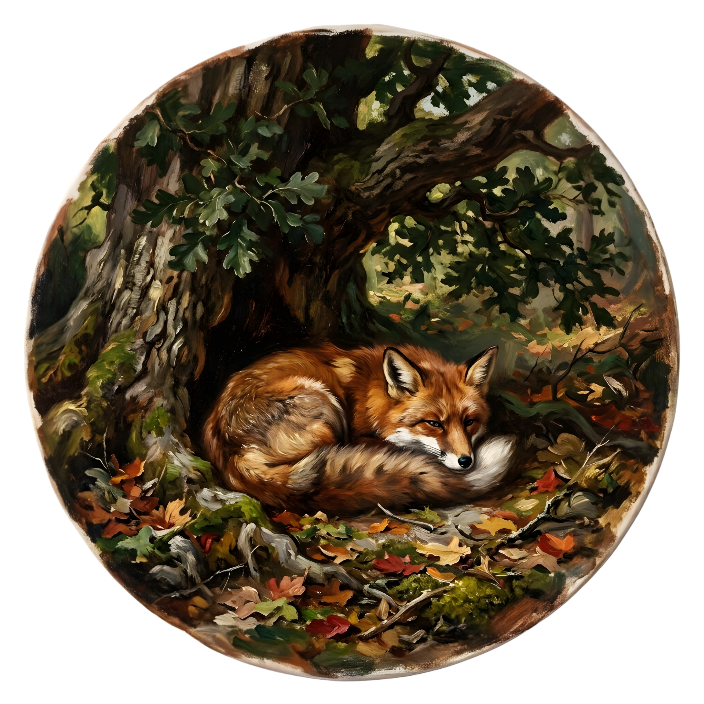

THE RED LADY OF WYRMHILL

Her name was Roweinna Sinclair, a strange woman whose pale, freckled face always seemed to carry an air of secrecy, as though she were perpetually guarding a private thought. If I am being honest, she was rather pretty. She might even have been striking, if only she had made the slightest effort to tame her wild mane of fiery red hair. It fell around her shoulders in unruly tangles, as if it had gone centuries without the mercy of a comb, or had long ago decided it would not submit to one.
I grew up an only child, raised by two devout Protestants, and from an early age I learned to measure myself against other people’s judgments. Right and wrong were not things I discovered on my own; they were handed to me, clearly labeled, and I was expected to accept them without question. There was a woman at our small church who would greet my six-year-old self with a hug and a kiss on both cheeks whenever we crossed paths. I remember noticing, as I got older, how pretty she was. My cousin Iain did not share my quiet fascination. He thought it was disgusting for boys like us to have the hots for a woman like her, given how ancient she was. She was only in her mid-thirties.
When I first saw Roweinna, I knew immediately that there was something different about her. I did not need anyone else’s approval to recognize her beauty. Sometimes she looked a little unhinged, wandering alone through the forest and murmuring to herself as she searched for wild mushrooms or other plants with strange-sounding names. Names she might have invented, or pronounced with such a thick accent that they came out like nonsense. Unusual she certainly was, but beautiful all the same. If only she had smiled more often.
According to the rumours passed around by nosy, middle-aged women in town, Roweinna came from a small place in Ireland called Tullycusheen. Years earlier, she had fled an abusive, alcoholic husband and settled here instead. She lived alone in a quiet, almost deceptively peaceful cottage atop a hill known locally as Wyrmhill, just north of town, and she kept her distance from everyone. Most of her days were spent tending a garden filled with curious plants no one else seemed able to name. Occasionally she would walk into town for her weekly shopping, exchanging only the bare minimum of words required. Very few people tried to talk to her. Everyone else made a point of staying out of her way.
To most of the children in town, Roweinna was strange and eccentric, if not outright mad. Patrick Malone was the loudest voice among us. He loved telling anyone who would listen that she was a malicious witch who spent her days muttering spells or brewing potions that allowed her to turn herself into animals. Some kids, stupid enough to believe him, began adding their own stories, each one more ridiculous than the last.
Harry Roston claimed during recess that he had seen her walking on water late at night while he and his father were fishing at the lake. Alexander Hudson swore his older brother once caught Roweinna halfway through turning into a small red fox. Most of them were either gullible or too afraid to call Patrick out. I knew better. Patrick Malone was a liar. He always had been. Making things up was how he kept everyone looking at him.
No one really knew what Roweinna was doing in our town, or what had driven her so far from home. What everyone did know was Patrick Malone’s appetite for cruelty. All of us, myself included, had tasted it at one time or another. Every Sunday morning, as Patrick and his friends passed Roweinna’s cottage on their way to the lake, they threw stones at her roof and shouted that she was a witch, as if daring her to prove it.
My mother taught me to be kind, especially to those who were different. Because of that, I never joined Patrick and his friends in their weekly ritual of spite. Instead, it earned me his attention. At school, I became one of his favorite targets. He never got into trouble for it. His father was the richest and fattest man in town, and no one was foolish enough to challenge him.
One Thursday afternoon after school, I was hurrying home to beat the coming storm when I heard someone shout my name.
“Hey, Harold!”
The voice came from behind a dilapidated, abandoned barn I was running past. I slowed, then stopped, glancing over my shoulder. Patrick stood there with his usual sidekicks, staring at me with nasty, expectant grins stretched across their stupid faces. He held a baseball bat loosely in one hand, tapping it against the wall he leaned on, as if to make sure I noticed it.
“What do you want?” I called, forcing a lightness into my voice as they started moving toward me.
“What do you want,” he repeated, pitching his voice high and childish.
Alexander Hudson and Harry Roston erupted into sharp, prepubescent laughter beside him, the sound grating and hollow in the open air.
“Seriously, what do you want, Patrick?” I asked again. My voice wavered now, the weight of what was coming finally settling into my chest.
“You know exactly what I want,” he said. “I’m in the mood to kick your bony ass after what that old faggot did to me in class today.” His thin lips curled into an ugly smile that only made his already unfortunate face worse.
He was talking about math class. Mr. Faraday had humiliated him in front of everyone for falling asleep at his desk. Everybody feared Mr. Faraday. He was a bitter man in his late thirties who would not hesitate to slap you hard across the face if you crossed him. No warnings. No remorse.
“And how is that my fault?” I snapped. “You deserved it. You were snoring like a farty pregnant cow.”
The wind picked up then, rattling the loose boards of the barn. Above us, the massive oak tree swayed slowly from side to side, its branches groaning as if it were listening.
“Well, you didn’t say anything to defend me,” Patrick shot back. “I stayed up late helping my little brother with his homework last night.” His eyes narrowed. “Now I need to kick your ass to feel better. You deserve to be punished. Right, kids?”
Alexander and Harry nodded eagerly, like trained dogs waiting for permission. I took a few steps backward, still trying to understand how hurting someone else could possibly make him feel good.
“Don’t get so worked up,” I said, forcing a weak grin. “Why don’t you just pop the pimples on your face and your butt cheeks until your anger goes away?”
The grin wiped itself off his face instantly.
I glanced up at the darkening sky, my stomach sinking as I realized I was not going to make it home before the storm broke.
“Stay where you are!” Patrick shouted. “I’ll just break a few of your ribs and be on my way.”
They started advancing, slow and deliberate.
“I have to go home,” I stammered. “I don’t want my parents worrying about me.”
“I’ll give them something else to worry about,” he said. “Little Harold getting his tiny ass kicked and left unable to walk straight for the rest of the week.”
They all laughed in unison.
“You’ll have to catch me,” I said.
“Don’t you dare!” Patrick yelled. “I’ll beat you to a pulp myself.” His hands curled into fists, his whole body trembling, like he was barely holding himself together.
“You’ll trip over your own feet and roll onto your fat belly before you even touch me,” I said. “Your ass is too big for your nonexistent personality.”
“Get him!” he roared.
Alexander and Harry lunged. I spun on my heels and ran, my legs pumping as fast as they could carry me.
“Stop, you idiot!” Patrick screamed after me. “Stop, or you’ll regret it!”
I did not stop. I ran straight toward the forest. A gust of cold wind tore my hat from my head and sent it skittering across the ground, but I did not slow to retrieve it. My lungs burned. My chest ached. I burst into a small clearing where the wind carved strange, rippling patterns through the grass. I glanced back and saw them crashing through the undergrowth, heavy and clumsy, their voices trailing threats and curses behind them. They were not fast enough.
Cold rain finally began to fall, thick drops stinging my skin as I broke through the treeline and sprinted toward the old bridge at the edge of the forest. The river roared beneath it, swollen and wild, its black surface churning under the storm.
“Stop, Harold!”
Patrick’s voice came faint and distorted through the curtain of rain behind me.
I kept running, angling toward the hills, half hoping that something terrible would happen to them. That one of them would slip and break his neck, or that the old bridge would finally give way under their combined weight. I veered left, toward the tall hills shrouded in low-hanging fog, wishing I could find the abandoned mine where I might hide until Patrick grew bored and turned back.
Instead, I stumbled upon the rusted iron gate of the old cemetery, the place where horny teenagers usually spent their nights making out until the cold chased them away.
I slipped through the open gate and ran until I reached a slanted, weather-beaten headstone at the far end of the grounds. I dropped to my knees behind it, my clothes soaked through, my whole body shuddering with cold. I thought of my mother. She would not be pleased to see me come home in a drenched school uniform, though I doubted she would care much for the explanation either.
I waited, counting my breaths. Listening. Minutes passed. I kept my eyes on the gate, panting so hard my chest ached, but no one appeared. The rain thickened, the fog closing in around the graves until the cemetery felt smaller, tighter, as though it were slowly sealing itself shut.
I was just about to stand when someone grabbed my wrist and squeezed. I gasped and jerked back on instinct, but the grip tightened.
“Thought you could just run away, didn’t you?” Alexander said. A wide, malicious grin stretched across his long, pale face.
“Get your filthy hands off me,” I said.
“Or what?” He snorted. “You gonna tell your stinking old mommy?” He let out a chortle, then shouted, “Patrick! Over here! I got him!”
He yelled at the top of his lungs.
Panic surged through me as I scanned the cemetery, but the downpour and fog swallowed everything. Somewhere beyond the gravestones, I heard Patrick and Harry laughing as they drew closer, their voices distorted by the rain.
“I said let me go!” I yelled, struggling against Alexander’s grip.
“Shut up,” he snapped, squeezing harder.
I knew what would happen when the others arrived. Just like before, they would make sure I limped home, or worse. I dragged a deep breath into my lungs and leaned closer to Alexander, lowering my voice until only he could hear it.
“Let me go, Alexander.” I said quietly, almost a whisper.
He stopped shouting. His grin faltered, replaced by a shallow, uncertain frown.
“You’re just like your father, aren’t you?” I said. “Didn’t he used to beat you and your mother like dogs when he was drunk? Isn’t that why he ended up the way he did?”
My mother had taken me to the town market often enough for me to soak up every scrap of gossip traded as hands busied themselves picking over the freshest vegetables.
“What the hell are you talking about?” he snapped, but I saw it then. The flicker of something ugly and familiar in his eyes.
“I bet you wouldn’t even hang around Patrick if your loser father were still alive,” I went on. “He’d beat you the same way he used to.”
He hesitated, his mouth opening as if to argue, or deny it, or beg me to stop. That hesitation was all I needed. I swung my wet fist into his face, hard enough to stun, not cripple. His grip loosened as he collapsed in a heap, whimpering like a wounded animal. I tore myself free, scrambled to my feet, and ran in the opposite direction without looking back.
“Son of a bitch!” he screamed after me. “I’m gonna kill you!”
His anguished, demented cry tore through the air and sent me sprinting faster, straight toward the waist-high concrete fence that ran along the steep riverbank south of the cemetery. I vaulted over it and shoved my way through the thick brush. As the tall grass parted, I stopped short.
I was standing at the edge of a deep crevice where the river narrowed sharply, choked by overgrowth and massive slabs of stone. The water below raged violently, swollen with storm runoff, foaming as it slammed against the rock.
“Well, well,” a voice said behind me. “Nowhere to run now, idiot.”
I turned to see Patrick landing clumsily on the other side of the fence, a triumphant smirk stretched across his face.
“You’re pretty fast for a little stinking rodent,” he said. “But not fast enough.”
He jumped over and advanced with exaggerated slowness, savoring it, the others trailing behind him. His oversized flannel shirt flapped wildly in the wind. He was right. There were only two choices left. Drown, or let him beat me senseless.
My heart slowed to a dull, heavy thud.
“I’ll beat you until your own mother won’t recognize your face,” he said.
Time stretched thin. I watched him lift the baseball bat and swing it toward my head.
I sidestepped at the last second.
The bat missed me and struck Harry instead, who had been laughing beside him, oblivious. The sound was wrong. Not sharp. Not clean. A dull, sickening crack. Harry was knocked sideways and collapsed onto his back, his body hitting the ground with a lifeless thud. Patrick and Alexander froze as the reality of what had happened settled in.
“Fuck. Fuck… look what you made me do!” Patrick shrieked, his face twisting as he turned back toward me. “I’m gonna kill you now!”
He raised the bat again. Then a bloodcurdling scream tore through the air. Alexander.
A blackened, rotting hand burst from the bushes behind him and clamped over his face. Another seized his arm and dragged him backward toward the cemetery. He thrashed wildly, his screams muffled as decayed fingers dug into his skin. Terror drained the color from his face before the corpse hauled him over the fence and both vanished from sight.
Silence followed. For a moment, none of us moved. I thought Patrick might attack me again. Instead, the bat slipped from his hands. His entire body trembled as he staggered backward, eyes locked on the place where Alexander had disappeared. He kept retreating, one step at a time, until his heel caught the edge. There was no scream. Only a sudden absence.
Then came the sound. A heavy, sickening thud echoing up from the crevice below. I turned away as my stomach dropped, knowing exactly what had happened.
“Hey. You alright?”
Fiery red hair appeared over the fence, followed by a pale, freckled face glowing faintly blue. Roweinna smiled warmly. Rain hovered around her slender form, droplets suspended in the air as though afraid to touch her.
“I…” My throat closed.
“You should have a cup of hot tea when you get home,” she said gently. “You don’t want to catch a cold.”
Her accent flowed like music, each word lilting and soft. I nodded stiffly, unable to look away. Strands of her hair floated freely around her head, untouched by wind or rain. She glanced down at the body between us and sighed.
“I warned these children many times,” she said. “They never listen.” Her lips puckered in a mockery of grief. “Perhaps I should have turned them into hares. But it is too late. Magic, once unleashed, cannot be undone. The Storm always comes on time.”
She tilted her head slightly. “I heard the wishes clearly,” she murmured. “As if they were being whispered straight into my ear.”
I stood frozen. Up close, she was even more beautiful than I remembered. There was warmth in her presence, but something else as well. Something dangerous.
“Very well, Harold,” she said, climbing over the fence. “I have fulfilled your wishes in exchange for the most essential ingredient.” She pointed toward Harry and lowered her voice. “Bone powder. I now have enough to last the year. Thank you.”
“Wishes?” I managed.
She frowned briefly, then smiled again, her teeth perfect and bright.
“Mouths speak. Eyes watch. Ears listen,” she whispered. “And with a simple spell…” she snapped her fingers, “... I make wishes come true.”
“Roweinna,” I stammered.
“Sshh.” She pressed a finger to her lips and winked. “You should go now. I will take care of this. No one will remember these children. I will not tell, if you will not. Our little secret.”
She waved her hand in a slow, repetitive motion, chanting words I did not recognize. Instantly, the storm ceased. The wind fell silent. The clouds parted and retreated into the hills. Sunlight poured down, bathing the land in a strange, reddish glow.
“Goodbye for now, Harold,” she called. “Be a good boy. Always.”
Something loosened inside me. I turned and ran, not stopping until I reached the old bridge.
That night, as I struggled through my math homework, a strange idea took root. Questions about Roweinna crowded my thoughts, feeding a growing curiosity. Past midnight, I tore my assignment into pieces and tossed them out the open window. I went to bed smiling, waiting for morning.
I hoped there was still room in Roweinna’s jar of bone powder for another wish.